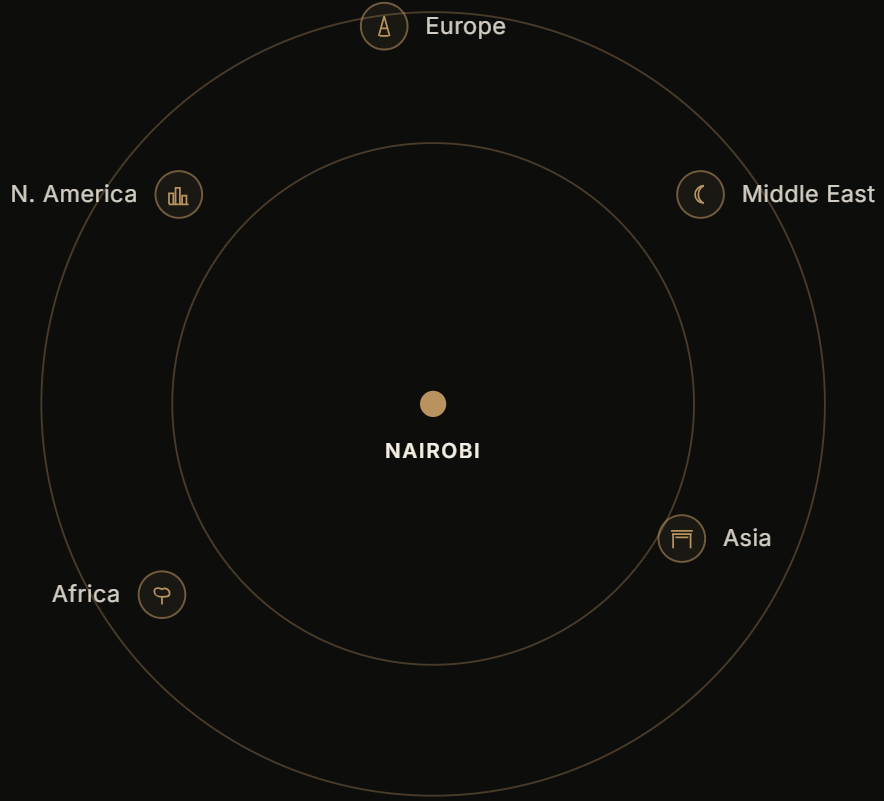

PREMIUM KENYAN FLOWERS • FRESH PRODUCE • HERBS
Exporting premium Kenyan flowers, fresh produce and speciality crops to global markets.
Grown in the highlands, graded to export standard, and moved through a single disciplined cold chain to partners across Europe, the Middle East, Asia, Africa and North America.
premium quality
weekly exports
cold chain controlled
global reach
Koch Global Ventures Ltd is a Kenya-based exporter of premium horticulture, fresh produce, and herbs & specialty crops, supplying wholesalers, retailers and food-service partners across the globe.
We work with trusted growers across Kenya's flower, fruit and highland farming belts — from the Rift Valley to Mt. Kenya's slopes — and move every consignment through a single, disciplined cold chain.
Consistency is our promise. Every shipment is graded to the same standard, packed under the same protocols, and tracked door to door.
Export regions served — Europe, Middle East, Asia, Africa & North America
Certified growers across Kenya's flower, fruit & highland farming belts
Door-to-door transit, maintained within an unbroken cold chain
Scheduled cold-chain exports via JKIA to global cargo hubs
Altitude and near-equatorial daylight give consistent year-round growing conditions unmatched by seasonal producers.
Decades of flower, fruit and vegetable export infrastructure, from grading houses to cargo handling.
Jomo Kenyatta International Airport (JKIA) offers frequent, established cargo routes to major global hubs.
A mature grower network trained to GLOBALG.A.P. and international phytosanitary standards.
Three collections, one disciplined cold chain — horticulture, fresh produce, and herbs & specialty crops, harvested, graded and packed to export standard year-round. Explore the full range, specifications and packing details for each collection.
From our Nairobi hub, Koch Global Ventures exports weekly to partners across Europe, the Middle East, Asia, Africa and North America — a single disciplined cold chain, wherever the destination.
Typical door-to-door transit of 24–72 hours, maintained within an unbroken cold chain from harvest to shelf.

International standard for safe, sustainably farmed produce.
Kenya Plant Health Inspectorate Service phytosanitary certification.
Hazard Analysis & Critical Control Points food-safety management.
Available for select flower and produce lines on request.